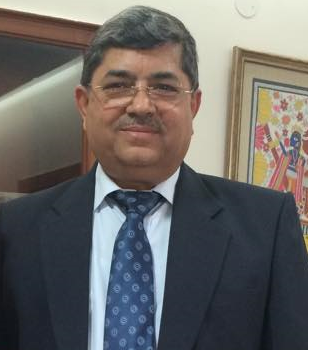

"Success comes to those who work hard and stays with those, who don't rest on the laurels of the past."
-Anonymous
Welcome to Bal Bharati Public School, GRH Marg. The institution situated in Central Delhi is one of the oldest and largest schools in the city. It is also the oldest among the chain of Bal Bharati Public Schools, all over India run by the Child Education Society. We aspire to empower all students to succeed in their world by offering a wide variety of challenging, enjoyable, and successful curricular opportunities, sports programs, performing arts programs along with various clubs and life skill-based activities.
The world today is changing at such an accelerated rate that we need to pause and reflect on the education system in schools. At Bal Bharati, we impart education to match the tech advancements and globalization. As we march our children ahead with the ethos of moral values and principles, we endeavour constantly to instill these qualities in our children. We take pride in helping them grow and develop into sensitive and responsible citizens of the next generation.
Teamwork is the hallmark of Bal Bharati. A committed and supportive management, dedicated teachers, and caring and cooperative parents blend harmoniously to create a child-centric school. It is natural to find in this ambiance, the intensive use of a variety of thinking activities, strategies, and group dynamics so that the classrooms become alive. In such a surroundings where work and effort are valued, the child's self-esteem is heightened, and this results in self-motivation. We try to understand and work with each child, and we firmly believe that it is our responsibility to enable the child in our care to develop as a whole.
Our philosophy of education has always been meeting the needs of the individual child. Children acquire skills and knowledge easily if we make the surroundings stimulating and purposeful. In the 21st century, the digital revolution has affected us all. Quite simply, it is changing everything: a brilliant barrage of information, entertainment, companionship, and education is speedily available. In this era of cutthroat competition, it is of paramount importance to impart an integrated education to the future citizens of the nation for successfully facing challenges. Bal Bharati Public School, therefore, lays special emphasis on life skill activities, providing students an edge over others to be leaders in their respective fields of activity. Through a life skills program, the school aims to develop a cadre of empowered, educated, and healthy adolescents, capable of making decisions in life.
In addition, students are encouraged to take advantage of the many resources available to them- their teachers, the library, the computer labs, and the technology-enabled smart classes. Our sports facilities provide our students the launching pad to hone their talents and make a mark in a variety of sports disciplines.
Our commitment is to provide a safe, positive, intellectual learning environment that will empower students to become creative problem solvers, thinkers, and inspired learners prepared for life in the twenty-first century. I would like to continue setting high expectations for our students about academic performance within the classroom, participation in co-curricular activities as well as responsible citizenship at school and in the community.
The Child Education Society promotes schools that recognize that parents are the first educators of the children. Schools run by Society, help parents in this all-important task. My appeal to parents is to make time to ask your ward specific questions about their time at school. Send in your feedback and keep abreast of relevant information regarding your child's performance. Your interest and concern for the school's progress will motivate them to do their best. Communicate with your child's teachers and staff members to establish a successful home/school connection. With your help, we will continue to be a school community in which every person feels respected, and valued, and is encouraged and challenged to achieve the highest levels.
As far as the members of the teaching staff are concerned, I believe that effective teachers create opportunities for collaboration, problem-solving, and application of classroom learning to real-life situations; you should design instruction to integrate a variety of innovative technological tools and resources to enhance learning; Collaborate with colleagues to share and discuss exemplary practices, interpret student performance data and design assessments that promote twenty-first-century skills.
Let's pledge to work together to take our school to further heights of excellence. I believe that 'when we dream together, it is the beginning of a reality'.
L.V.Sehgal
PRINCIPAL
